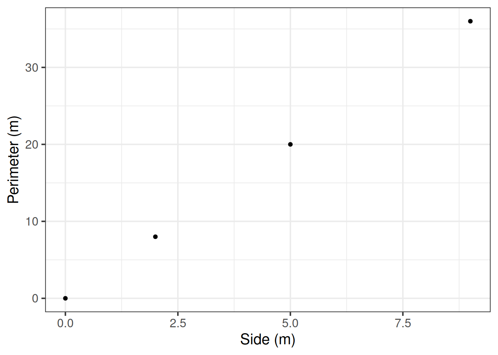
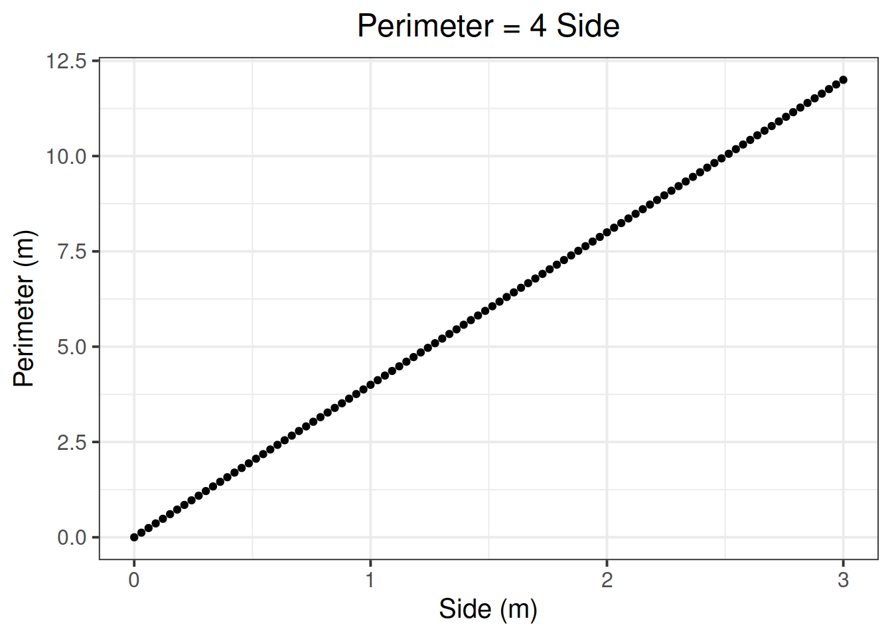
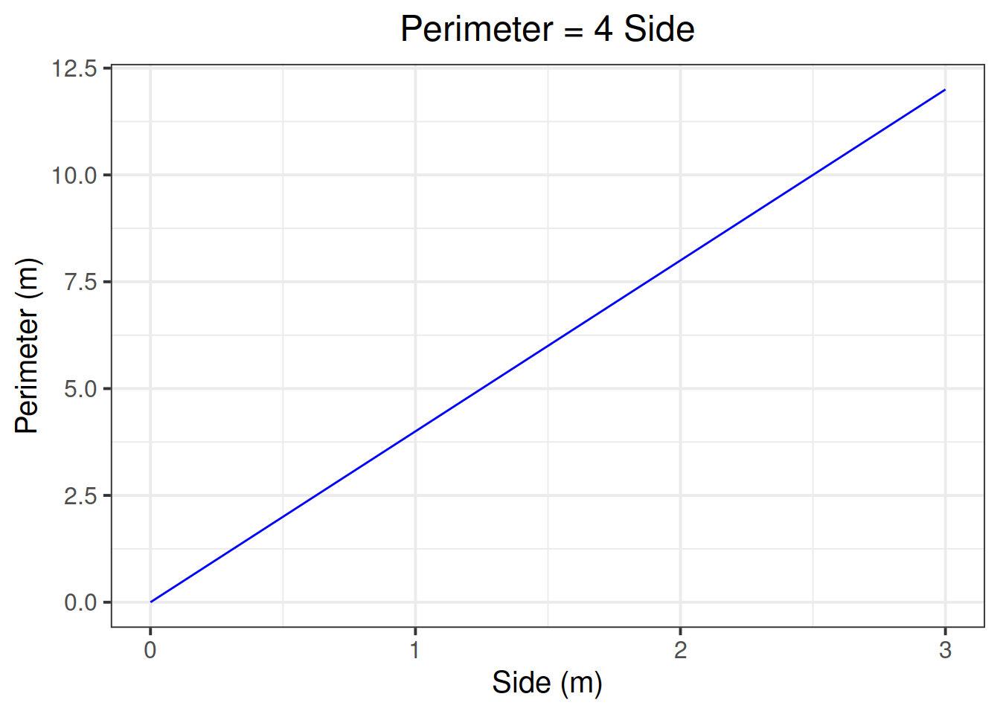
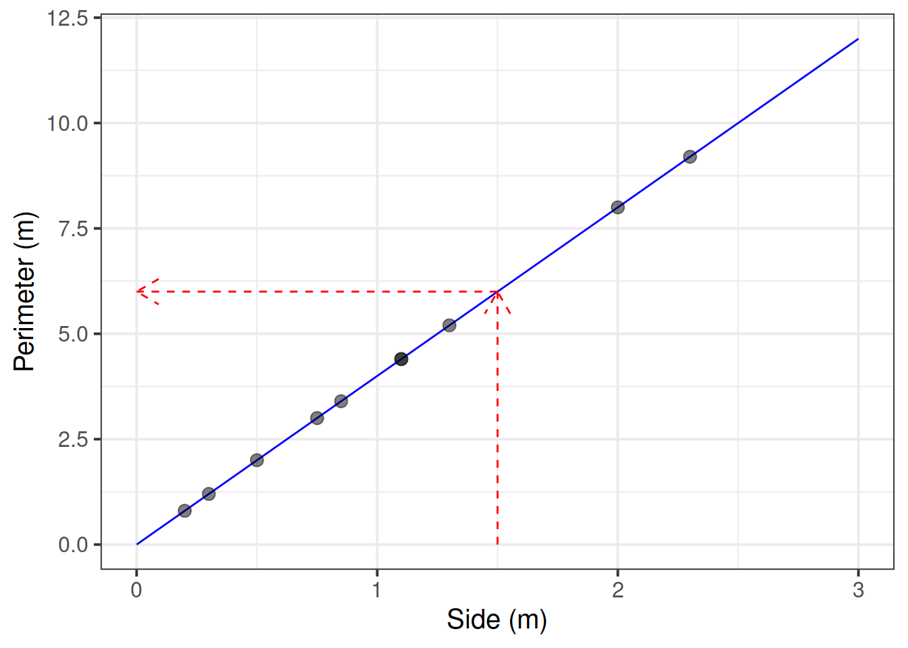

Functions and mathematical models
Question 2
Consider the function \(y = 2 + 5 \ x\).
- Identify the independent variable
- Identify the dependent variable
- Describe in words what the function does, and compute the output for the following input:
\[
x = \begin{bmatrix}
2 \\
6
\end{bmatrix}
\]
Solution
The function says that the \(y\) value is obtained as a transformation of the \(x\) value.
- The independent variable is \(x\)
- The dependent variable is \(y\)
- The \(y\) value is obtained as five times \(x\), plus two.
In particular, if \(x\) equals 2, the corresponding value of \(y\) will be \(2 + 5 * 2 = 12\).
Similarly, if \(x\) equals 6, the corresponding value of \(y\) will be \(2 + 5 * 6 = 32\).
\[
y = \begin{bmatrix}
2 + 5 * 2 \\
2 + 5 * 6
\end{bmatrix}
= \begin{bmatrix}
12 \\
32
\end{bmatrix}
\]
Question 3
Write down in words and in symbols the function summarising the relationship between the side of a square and its perimeter.
Hint: We are interested in how the perimeter varies as a function of its side. Hence, the perimeter is the dependent variable, and the side is the independent variable.
Solution
In words
The perimeter of a square is four times the length of its side.
In symbols
The relationship between side and perimeter of squares is given by:
\[
Perimeter = 4 \ Side
\]
If you denote by \(x\) the independent variable Side and by \(y\) the dependent variable Perimeter, this can be written as
\[
y = 4 \ x
\]
In today’s lab you will compute the output of functions and plot them. To do so, you will need functionality from the tidyverse package such as tibble(), mutate(), and ggplot().
Question 4
Load the tidyverse package.
Create a data set called squares containing the perimeter of squares having sides of length \(0, 2, 5, 9\) metres.
Hint: Remember that to combine multiple numbers together we use the function c().
Solution
library(tidyverse)
squares <- tibble(
side = c(0, 2, 5, 9),
perimeter = 4 * side
)
squares
## # A tibble: 4 x 2
## side perimeter
## <dbl> <dbl>
## 1 0 0
## 2 2 8
## 3 5 20
## 4 9 36
Question 5
Plot the squares data as points.
Solution
ggplot(data = squares, aes(x = side, y = perimeter)) +
geom_point() +
labs(x = 'Side (m)', y = 'Perimeter (m)')

Now, instead of just 4 points, we will obtain many more, one hundred, and use them to visualise the relationship between side and perimeter of squares.
Question 6
Create a sequence of one hundred side lengths (x) going from 0 to 3 metres.
Compute the corresponding perimeters (y).
Plot the side and perimeter data as points on a graph.
Visualise the functional relationship between side and perimeter of squares. To do so, use the function geom_line() to connect the computed points with lines.
Solution
Let’s start by creating the side and perimeter data:
squares_grid <- tibble(
side = seq(0, 3, length.out = 100),
perimeter = 4 * side
)
Plot the individual points:
ggplot(data = squares_grid, aes(x = side, y = perimeter)) +
geom_point() +
labs(x = 'Side (m)', y = 'Perimeter (m)', title = 'Perimeter = 4 Side')

Visualise the functional relationship by connecting the individual points with lines:
ggplot(data = squares_grid, aes(x = side, y = perimeter)) +
geom_line(colour = 'blue') +
labs(x = 'Side (m)', y = 'Perimeter (m)', title = 'Perimeter = 4 Side')

The function \(y = 4 \ x\) that you plotted above is an example of a function representing a mathematical model.
We typically validate a model using experimental data.
However, we all know how squares work and that two squares with the same side will have the same perimeter. Hence this is a deterministic model as it is a model of an exact relationship.
Question 7
The Scottish National Gallery kindly provided us with measurements of side and perimeter (in metres) for a sample of 10 square paintings.
The data are provided below:
sng <- tibble(
side = c(1.3, 0.75, 2, 0.5, 0.3, 1.1, 2.3, 0.85, 1.1, 0.2),
perimeter = c(5.2, 3.0, 8.0, 2.0, 1.2, 4.4, 9.2, 3.4, 4.4, 0.8)
)
Plot the mathematical model of the relationship between side and perimeter for squares, and superimpose on top the experimental data from the Scottish National Gallery.
Solution
sng <- tibble(
side = c(1.3, 0.75, 2, 0.5, 0.3, 1.1, 2.3, 0.85, 1.1, 0.2),
perimeter = c(5.2, 3.0, 8.0, 2.0, 1.2, 4.4, 9.2, 3.4, 4.4, 0.8)
)
ggplot() +
geom_line(data = squares_grid, aes(x = side, y = perimeter), colour = 'blue') +
geom_point(data = sng, aes(x = side, y = perimeter), colour = 'black',
alpha = 0.5, size = 3) +
labs(x = 'Side (m)', y = 'Perimeter (m)')
The above plot shows perfect agreement between the observed data and the model.
Question 8
Use the mathematical model to predict the perimeter of a painting with a side of 1.5 metres.
Solution
We do not have a painting with a side of 1.5 metres within the random sample of paintings from the Scottish National Gallery.
We predict the perimeter of an unobserved squared painting having a 1.5 metre side using the mathematical model.
You can obtained this prediction either using a visual approach or an algebraic one.
Visual approach

Sometimes we can directly read a predicted value from the graph of the functional relationship.
Consider the plot created in the previous question. First, we need to check where x = 1.5. Then, we draw a vertical dashed line until it meets the blue line. The y value corresponding to x = 1.5 can be read off the y-axis.
However, in this case it is not that easy to read it from the drawing… Let’s try the next approach.
Algebraic approach
You can substitute the x value in the formula and calculate the corresponding y value.
\[
y = 4 \ x = 4 \ (1.5) = 6
\]
We might write this up as:
The predicted perimeter of squared paintings having a 1.5m side is 6m.
NOTE: Don’t forget to always include the measurement units when reporting/writing-up results!
Statistical models
Consider now the relationship between height (in inches) and handspan (in cm). Utts and Heckard (2015) provides data for a sample of 167 students which reported their height and handspan as part of a class survey.
Data: handheight.csv. Click the plus to expand →
Download link
Download the data here
Description
The data set records the height and handspan reported by a random sample of 167 students as part of a class survey (Utts and Heckard 2015).
The variables are:
height, measured in incheshandspan, measured in centimetres
Preview
The first six rows of the data are:
|
height
|
handspan
|
|
68
|
21.5
|
|
71
|
23.5
|
|
73
|
22.5
|
|
64
|
18.0
|
|
68
|
23.5
|
|
59
|
20.0
|
Question 9
Read the handheight data into R and name the data set handheight.
Solution
handheight <- read_csv(file = 'https://uoepsy.github.io/data/handheight.csv')
head(handheight)
## # A tibble: 6 x 2
## height handspan
## <dbl> <dbl>
## 1 68 21.5
## 2 71 23.5
## 3 73 22.5
## 4 64 18
## 5 68 23.5
## 6 59 20
Question 10
Investigate how handspan varies as a function of height for the students in the sample.
Do you notice any outliers or points that do not fit with the pattern in the rest of the data?
Comment on any main differences you notice with the relationship between side and perimeter of squares.
Hint: Use a scatterplot to visualise the relationship between two numeric variables.
Solution
The handheight data set contains two variables, height and handspan, which are both numeric and continuous. We display the relationship between two numeric variables with a scatterplot.
We can also add marginal boxplots for each variable using the package ggExtra. Before using the package, make sure you have it installed via install.packages('ggExtra').
library(ggExtra)
plt <- ggplot(handheight, aes(x = height, y = handspan)) +
geom_point(size = 3, alpha = 0.5) +
labs(x = 'Height (in.)', y = 'Handspan (cm)')
ggMarginal(plt, type = 'boxplot')
Outliers are extreme observations that do not seem to fit with the rest of the data. This could either be:
- marginally along one axis: points that have an unusual (too high or too low) x-coordinate or y-coordinate;
- jointly: observations that do not fit with the rest of the point cloud.
The boxplots in Figure 2 do not highlight any outliers in the marginal distributions of height and handspan.
Furthermore, from the scatterplot we do not notice any extreme observations or points that do not fit with the rest of the point cloud.
We notice a moderate, positive (that is, increasing) linear relationship between height and handspan.
Recall Figure 1, displaying the relationship between side and perimeters of squares.
In the plot we notice two points on top of each other, reflecting the fact that two squares having the same side will always have the same perimeter.
In fact, the data from the Scottish National Gallery include two squared paintings with a side of 1.1m, both having a measured perimeter of 4.4m.
Figure 2, instead, displays the relationship between height and handspan of a sample of students. The first thing that grabs our attention is the fact that students having the same height do not necessarily have the same handspan. Rather, we clearly see a variety of handspan values for students all having a height of, for example, 70in. To be more precise, the seven students who are 70 in. tall all have differing handspans.
Question 11
Using the following command, superimpose on top of the scatterplot a best-fit line describing how handspan varies as a function of height.
For the moment, the argument se = FALSE tells R to not display uncertainty bands.
geom_smooth(method = lm, se = FALSE)
Comment on any differences you notice with the line summarising the linear relationship between side and perimeter.
Solution
ggplot(handheight, aes(x = height, y = handspan)) +
geom_point(size = 3, alpha = 0.5) +
geom_smooth(method = lm, se = FALSE) +
labs(x = 'Height (in.)', y = 'Handspan (cm)')
The line representing the relationship between side and perimeter of squares is able to predict the actual perimeter value from the measurement of the side of a square.
This is possible because the relationship between side and perimeter is an exact one.
That is, any squares having the same side will have the same perimeter, and there will be no variation in those values.
The line that best fits the relationship between height and handspan, instead, is only able to predict the average handspan for a given value of height.
This is because there will be a distribution of handspans at each value of height.
The line will fit the trend/pattern in the values, but there will be individual-to-individual variability that we must accept around that average pattern.
The mathematical model
\[
Perimeter = 4 \ Side
\]
or, equivalently,
\[
y = 4 \ x
\]
represents the exact relationship between side and perimeter of squares.
Contrary to the relationship represented by the mathematical model above, the relationship between height and handspan shows deviations from the “average pattern.” Hence, we need to create a model that allows for deviations from the linear relationship. This is called a statistical model.
A statistical model includes both a deterministic function and a random error term:
\[
Handspan = \beta_0 + \beta_1 \ Height + \epsilon
\]
or, in short,
\[
y = \underbrace{\beta_0 + \beta_1 \ x}_{f(x)} + \underbrace{\epsilon}_{\text{random error}}
\]
The deterministic function need not be linear if the scatterplot displays signs of nonlinearity.
In the equation above, the terms \(\beta_0\) and \(\beta_1\) are numbers specifying where the line going through the data meets the y-axis and its slope (rate of increase/decrease).
Question 12
The line of best-fit is given by:
\[
\widehat{Handspan} = -3 + 0.35 \ Height
\]
What is your best guess for the handspan of a student who is 73in tall?
And for students who are 5in?
Solution
The predicted average handspan for students who are 73in tall is \(-3 + 0.35 * 73 = 22.55\)cm.
The predicted average handspan for students who are 5in tall is \(-3 + 0.35 * 5 = -1.25\)cm.
But wait, handspan can not be negative… This does not make any sense!
That’s right, we went too far off the range of the available data on heights, which were between 57in and 78in. We extrapolated. This is very dangerous…